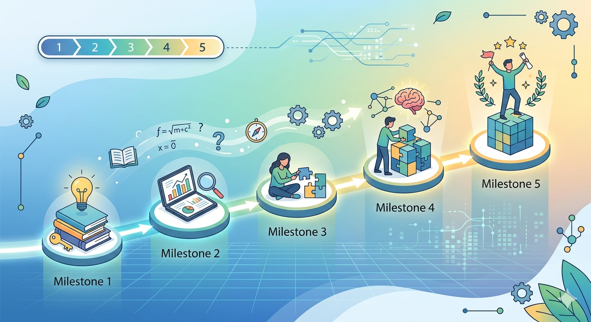

Kariyerleri Karşılaştır
Data Science, Machine Learning, NLP, Computer Vision, Generative AI ve MLOps rollerini yan yana gör.
AI Career Guide; yapay zeka alanındaki meslekleri tanıtan, öğrenme sırasını sadeleştiren ve öğrencilerin kendi ilgi alanlarını değerlendirmesine yardımcı olan bir kariyer rehberi sitesidir.
Kariyer alanlarını ayrı ayrı tanıtmak, öğrenme yolunu sıralar ve öğrencinin ilgi alanlarını form üzerinden düşünmesini sağlar.
Data Science, Machine Learning, NLP, Computer Vision, Generative AI ve MLOps rollerini yan yana gör.

Programlama, matematik, veri analizi, modelleme ve portfolyo adımlarını düzenli şekilde takip et.
Form soruları ile hangi çalışma biçimlerininn sana daha yakın olduğunu fark et.
Bazı roller veriyi anlamaya, bazıları model geliştirmeye, bazıları dil veya görsel veriler üzerinde çalışmaya, bazıları ise modelleir gerçek sistemlere taşımaya odaklanır. Bu yüzden doğru başlangıç noktası ilgi alanını ve çalışma tarzını tanımaktır.
Yol Haritasını İnceleYapay zeka kariyerinde acele etmek yerine konuları mantıklı bir sırayla öğrenmek daha sağlıklı bir ilerleme sağlar.
Web temelleri, algoritmik düşünme ve Python hazırlığı ile başla.
İstatistik, olasılık, veri temizleme ve grafik yorumlama becerilerini geliştir.
Makine öğrenmesi, derin öğrenme ve model değerlendirme mantığını öğren.
NLP, Computer Vision, Generative AI veya MLOps alanlarından birine yönel.
Kariyerler sayfası ile seçenekleri inceleyebilir, test sayfasındaki form ile ilgi alanlarını değerlendirebilirsin
Kariyer Sayfasına Git